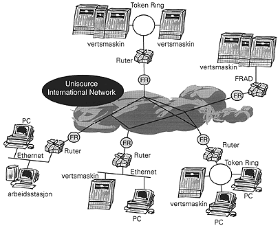

Unidata Frame Relay er en meget kostnadseffektiv tjeneste for kommunikasjon mellom lokalnett. Tjenesten omfatter komplett overvåking, kontroll og administrasjon. Den kombinerer fleksibiliteten og sikkerheten i X.25 datakommunikasjon med høy ytelse tilsvarende leide linjer. Kombinasjonen av minimal forsinkelse og stor båndbredde gjør at tjenesten er ideéll for dataintensiv LAN til LAN kommunikasjon. Unidata Frame Relay er basert på en fleksibel arkitektur. Dette gjør at den takler dagens sterkt økende krav til kommunikasjon samtidig som den gir norske bedrifter, nasjonalt og internasjonalt en naturlig overgang til morgendagens høyhastighetsteknologi.
Unidata Frame Relay gir:
Tjenesten tilbys på Unisource sitt fleksible og pålitelige nettverk med aksesspunkter (ânoder) over hele verden. Alle noder er basert på felles teknologiplattform, noe som sikrer en enhetlig tjeneste over hele verden. I Norge er tjenesten landsdekkende med noder i 20 byer. Unidata Frame Relay blir overvåket, kontrollert og administrert av Unisource Network Management Centres. 24 t help-desk er etablert i Norge. Tjenesten tilbys med fleksibel prising og fakturering.
Karakteristika: |
Frame Relay tjenesten |
|
Aksesshastighet (hastighet på kommunikasjonslinje og port i kb/s) |
64, 128, 192, 256, 320, 384, 448, 512, 768, 1024, 1920 |
|
Garantert informasjonshastighet (CIR) (kapasitet i kb/s) |
4, 8, 16, 32, 48, 64, 96, 128, 192, 256, 384, 512 |
| Maksimal informasjonshastighet (EIR) | Opptil aksesshastighet |
| YTELSE: |
| Generell oppetid for nettverket | 99,99% (garantert 99,9%). |
| Forsinkelse | 50 ms (garantert 100 ms) |
| TILLEGGSYTELSER: | Digital hurtigstart (ISDN, 64 kb/s) | Opsjon |
| Digital oppringt backup (ISDN, 64 kb/s) | Opsjon |
|
BETINGELSER Leveringstid (gj.sn.) |
6 til 8 uker. |
| Kontraktsperiode | 1 til 5 år. |
| Fast prising | Ja |
| Fleksibel fakturering | Ja |
| SERVICE ADMINISTRASJON Totaladministrasjon | Ja |
| Help-desk | 24 timer |
| Lokal brukerstøtte | Avtales |
| SLA rapporter | Ja |
| Rapportering av supportfrekvens | Opsjon |
| Endring av CIR/EIR (gj.sn.) | 2 dager |
| Endringer i maskinvare eller kommunikasjonslinjer (gj.sn.) | 6 - 8 uker |
|

|  |